AI Academy · Level 3 · Grade 8 · Week 20 · Student lesson
Conversation State and Memory
Learn to understand, design, build, test and explain AI systems responsibly.
Project: Verified Study Buddy
Before you start
AI-2 Week 4: state records the current values.
Plan time to read, investigate and explain. Keep predictions separate from observations.
Student lesson · 1 of 17
Your mission
Your learning target
I can explain the mechanism and terminology of conversation state and retention.
I can apply the stated procedure to a new case with a traceable result.
I can identify an assumption or limitation and design a revealing follow-up.
Remember before reading
Close your notes first. A rough first answer helps us choose the right starting point; it is not a score for your ability.
Without opening the old lesson, explain one key idea from User Need and AI Contribution. Give an example and a mistake that the idea helps you avoid.
Without opening the old lesson, explain one key idea from Model Memory vs Retrieval. Give an example and a mistake that the idea helps you avoid.
Without opening the old lesson, explain one key idea from Hallucination Failure Types. Give an example and a mistake that the idea helps you avoid.
After trying, check the relevant lesson or ask your teacher. Change the part of your explanation that the evidence shows was wrong.
Week 20: Conversation State and Memory
Products choose what context to keep, summarize, forget, or retrieve.
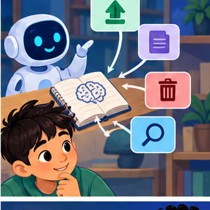
CREATOR MISSION
Design memory rules for a tutoring conversation.
Creator name and date:
Readiness for the connected explanation
Recall Tools and API contracts. Explain why a recorded result needs its input conditions and evidence source before it can support a claim.
This week’s end goal
By the end, I can explain conversation state and memory using a traced example and a stated limitation.
Student lesson · 2 of 17
Notice the evidence
PICTURE STORY
Notice → Predict → Explain
Begin with visible evidence. Do not explain more than the picture and information support.
MYSTERY
The learners must use conversation state and memory to solve a problem. What information do they have? What decision or calculation do they make? What would count as evidence that it worked?
Three observations (what you can point to):
My prediction and the clue supporting it:
A closer explanation
Conversation state stores facts or prior interactions for later use. It needs scope, provenance, correction and retention rules rather than indefinite accumulation.
Begin by writing the question the procedure is intended to answer. Identify the information already supplied, the information it will produce and the information still missing. These are constructed classroom examples; they do not require live accounts, private records or an external service. Do not treat a plausible explanation as a measured outcome.
Student lesson · 3 of 17
See how it works
VISUAL MECHANISM
Input → Process → Output
Trace the information. At each stage, ask what changed and how you could test it.
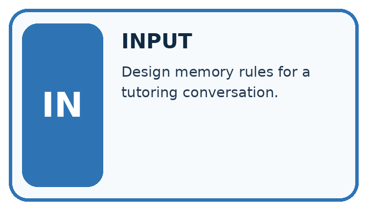
↓
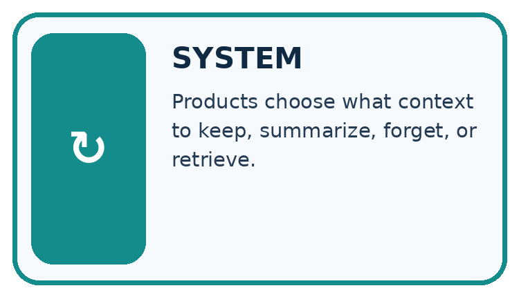
↓
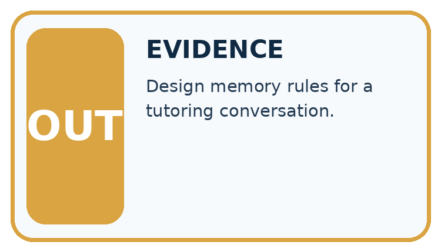
Which stage could fail even when the other two are correct? Explain:
A closer explanation
This classroom assistant keeps an approved room ID only for the current session. A later correction replaces the active value but retains an audit event until session end. Do not persist private text merely because it appeared in conversation.
Conversation state and retention — evidence trace
Before applying the procedure, write its units, denominator or decision boundary where relevant. A partner should be able to repeat each step using the same inputs. If a required input is absent or violates the stated contract, record that condition explicitly instead of quietly replacing it with a convenient value.
Connect the picture and the explanation
Point to the input, the deciding step and the result in this week’s visual. Explain the same step in ordinary words. A picture helps when you can say what each part represents.
Student lesson · 4 of 17
Compare the cases
CASE GALLERY
Four Tests, Four Kinds of Evidence
A system is not understood until it survives more than one comfortable example.


NORMAL CASE: predict and name evidence. BOUNDARY CASE: predict and name evidence.


MISSING INFORMATION: predict and name evidence. TRANSFER CASE: predict and name evidence.
Which case is most likely to reveal a hidden assumption? Why?
Change one thing in the pictured case
Change: The next session asks “summarise my book” without naming one.
Prediction: Ask which book the learner wants.
Reason: The declared policy clears session state, so yesterday’s choice is unavailable.
Student lesson · 5 of 17
Words that unlock the idea
VOCABULARY LAB
Words You Can Use to Reason
A definition matters when you can recognize the idea, use it, and contrast it with a near-miss.
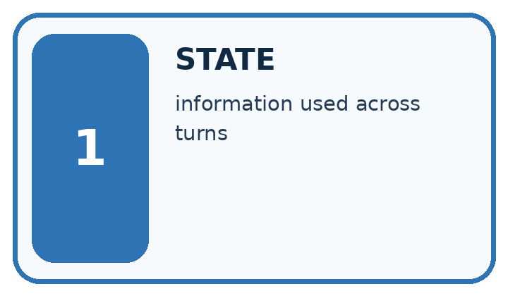
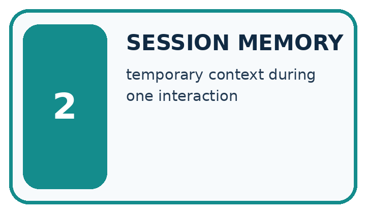
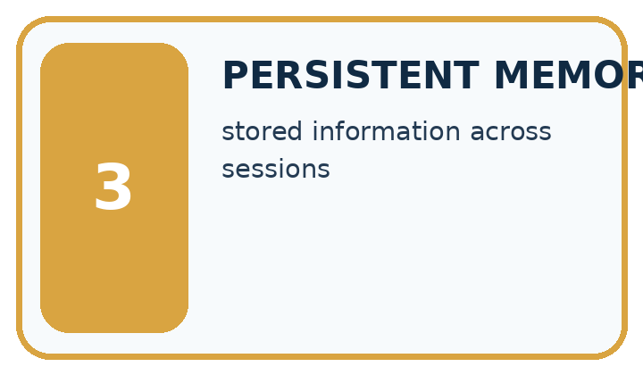
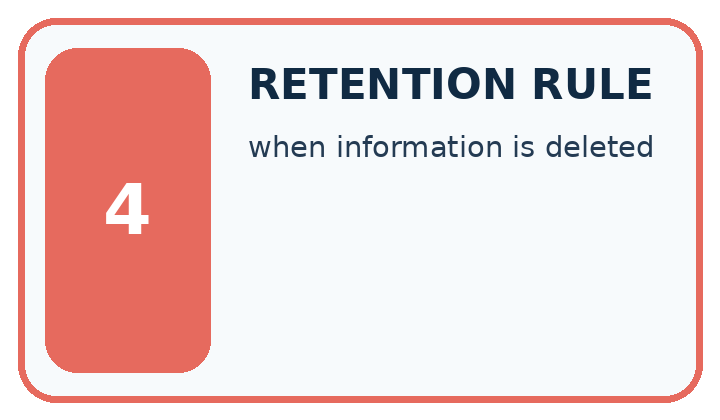
| Word | My own example | Not this / boundary |
|---|---|---|
| state | The current values and information that determine what a process does next. | |
| session memory | Information maintained during the current interaction, without assuming it persists afterwards. | |
| persistent memory | Information retained beyond the current session by an explicit storage mechanism. | |
| retention rule | A policy specifying what information is kept, for how long and when it is deleted. |
Words used in the closer explanation
| Word | Meaning |
|---|---|
| Session state | Information retained within a defined interaction lifetime |
| Correction event | A record updating an earlier active value |
Student lesson · 6 of 17
Follow a worked example
WORKED EVIDENCE
Reason Step by Step
Predict first. Then check each step. A correct answer without visible reasoning is incomplete evidence.
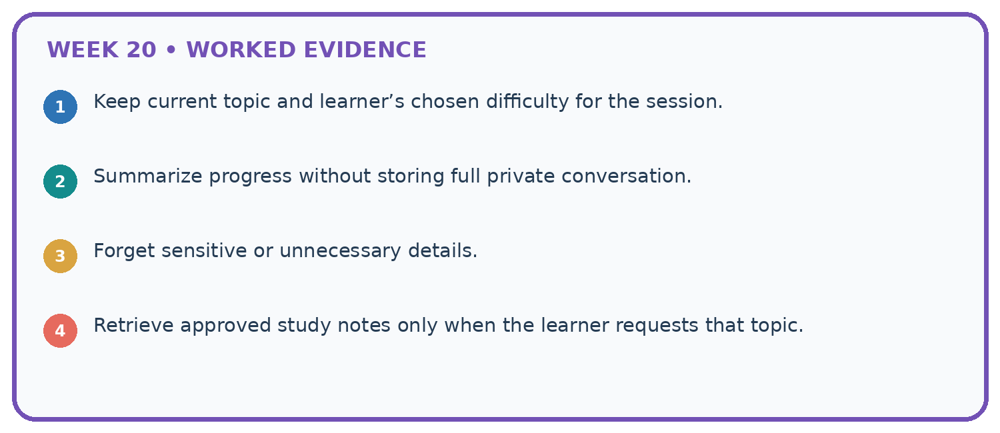
1. Keep current topic and learner’s chosen difficulty for the session.
2. Summarize progress without storing full private conversation.
3. Forget sensitive or unnecessary details.
4. Retrieve approved study notes only when the learner requests that topic.
Recalculate, retrace, or restate the reasoning in your own representation:
CHECK Did the evidence answer the exact question? Did the total, path, or source record stay consistent?
A closer explanation
Turn 1 selects room A; turn 2 corrects to room B. A later answer uses A from an older summary.
Active state should be B under the correction rule. The summary is stale; regenerate or invalidate it and preserve the correction audit within the declared session lifetime.
Compare the intermediate evidence with the final statement. Explain why each number or decision follows from the stated inputs. The conclusion belongs to this scenario and procedure; changing the inputs, evaluation population or authority can change what it establishes. Retain the raw record so a later revision can be compared honestly.
Learn from the worked case
Cover the result before checking it. Say what is given, choose the procedure, and follow one step at a time. Then uncover the result and explain your first mismatch. Ask why a step is allowed, not only what number it produces.
A pictorial worked case: Conversation State and Memory
Keep a reading conversation consistent when the learner changes the selected book.
The facts we will use
In this toy session, “choose Cedar” sets selected_book=Cedar; “change to Maple” replaces it. Session state is cleared on exit.
All inputs and outcomes in this worked example are invented classroom data; no real model run is claimed.

Read the picture one step at a time
Why this result follows
Read the picture in order. Clear selected_book. A new session begins with no selected book. The arrows show which recorded input or intermediate result each decision uses. Explain the deciding step aloud before checking the changed case; pointing to the final answer alone does not show how it follows.
What this example does not establish
Conversation state is an application record; it is not evidence that the model permanently learned the learner’s preferences.
Read the labelled picture: What is selected_book after the correction and after exit? Point to the relevant step in the picture, then write the changed result and the rule or evidence that supports it.
Change one thing: The next session asks “summarise my book” without naming one. Predict the result before checking the explanation. What remains the same?
Student lesson · 7 of 17
Find and repair a mistake
ERROR DETECTIVE
Compare → Diagnose → Repair
Do not patch the answer. Find the earliest unsupported assumption, wrong step, or weak evidence.
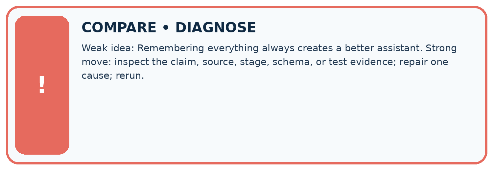
| Evidence record | Expected | Actual | Likely cause / next test |
|---|---|---|---|
| normal case | works | ||
| boundary case | stated rule | ||
| missing input | safe response | ||
| fresh transfer | generalizes |
Repair one cause. Why is this repair better than changing several things?
A closer explanation
Complete the supported workbook tasks before attempting W4 independently. Record any hints or help used. After feedback, use the teacher's fresh retry rather than copying the earlier answer. For a project, select a relevant new case, predict the outcome from the declared rule and preserve the result alongside any revision.
Student lesson · 8 of 17
Practise together
LOGIC STUDIO
Specify Before You Run
Prompts, schemas, retrieval, tool calls, and code are inspectable parts of one AI product.

SET task, audience, constraints, output_schema LOAD approved_context or retrieval_result CALL model or allowed_tool VALIDATE fields, claims, citations, and safety IF evidence missing: ask, retrieve, or abstain RETURN useful output + source trail + limitations
Trace one input. Which line changes the state or chooses a path?
A closer explanation
Remembered statements are not automatically current or verified; retention should follow the stated purpose and policy.
A useful check asks what would make the reasoning fail. Distinguish a failure to execute the declared procedure from a weakness in the procedure itself. The first may require a correction; the second requires an explicitly revised method and new evidence. Preserve unsuccessful cases so an improved result cannot hide the original problem.
Practise with less help: Trace the worked case
Use workbook W2 for the connected example “Conversation state and retention”. First fill the input and rule boxes. Try the middle steps before asking for a hint. After a hint, try the next step yourself.
| Plan | Do | Check |
|---|---|---|
| What is given? Which rule or procedure applies? | Record each intermediate step. | Does the result follow? What remains unknown? |
Explain your trace to a partner. Your partner points to one step to check. Swap roles on the next case. Each person writes their own explanation.
Check your reasoning
Use the worked case for Conversation state and retention. Proposed explanation: “The worked result establishes every future case”. Decide whether this explanation is supported. Point to the step or supplied fact that decides; explain your repair if needed.
Answer on your own before discussion. If you are unsure, say which step you need help with.
Explain the picture
What is selected_book after the correction and after exit? Point to the relevant step in the picture, then write the changed result and the rule or evidence that supports it.
This is supported practice. Keep the separately named independent case for an attempt before feedback.
Student lesson · 9 of 17
Run the investigation
EVIDENCE LAB
Predict → Test → Record → Explain
Keep expected and actual results separate. Surprises are useful data when recorded honestly.
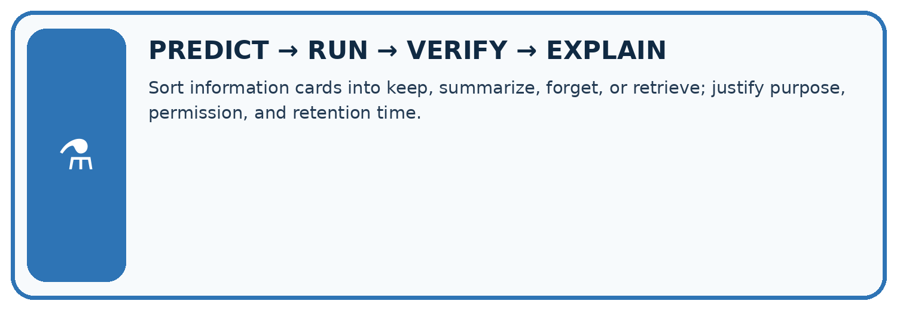
Sort information cards into keep, summarize, forget, or retrieve; justify purpose, permission, and retention time.
| Test / input | Prediction | Actual | Evidence / calculation | Change or keep? |
|---|---|---|---|---|
| normal | ||||
| boundary | ||||
| missing | ||||
| fresh transfer |
What did the hardest test teach you that the normal test did not?
Plan → try → check
Before trying: what do I expect, and why? While trying: which step could first go wrong? Afterwards: what did I actually observe, and what should change? Keep “not run” if you only traced the procedure.
Student lesson · 10 of 17
Build your understanding
MASTERY
From Knowing the Word to Owning the Idea
Move upward only when you can produce evidence without copying the worked example.

1 • NAME: Define the concept without repeating the textbook.
2 • TRACE: Show the information, state, branch, calculation, or evidence path.
3 • APPLY: Solve a different example independently.
4 • CHALLENGE: Find a boundary case, counterexample, or unfair outcome.
5 • EXPLAIN LIMITS: Say when the result should not be trusted or used alone.
My strongest evidence of independent understanding:
Student lesson · 11 of 17
Connect your project
CUMULATIVE PROJECT
Verified Study Buddy
Every week adds one inspectable piece. The system must show how it reached a result.
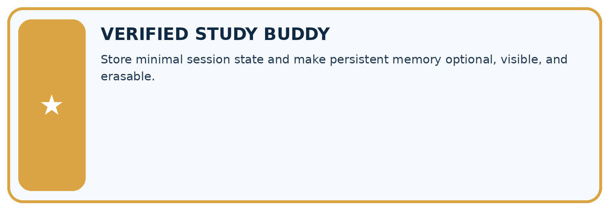
THIS WEEK’S CHECKPOINT Store minimal session state and make persistent memory optional, visible, and erasable.
SYSTEM MAP Learner need → prompt/schema → approved sources/retrieval → model/tool → structured answer → verification → human decision
What will you add, change, or verify in the project this week?
What should remain under human control?
RESPONSIBLE DESIGN Collect only necessary information. Show uncertainty and limits. Never confuse fluent output with verified truth.
Evidence for your project
For your Verified Study Buddy, save the input, procedure, observed result and limitation of this check. Label this worked example as practice; use a different, previously unreviewed case when checking independent understanding.
Student lesson · 12 of 17
Show what you know
INDEPENDENT MASTERY PROOF
Explain • Transfer • Test • Defend
Complete this page without copying the worked example. Your reasoning matters more than decoration.
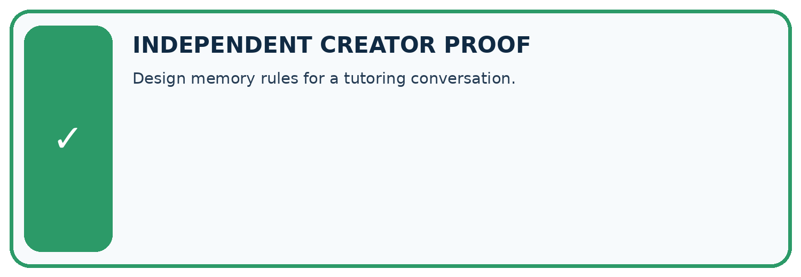
CHALLENGE Design memory rules for a tutoring conversation.
1. My fresh example, trace, calculation, or design:
2. My evidence that it works (include a boundary or missing-data case):
3. One limitation, fairness concern, or situation needing human review:
SELF-CHECK □ I explained the mechanism □ I used evidence □ I tested a fresh case □ I named a limitation □ I can answer ‘why?’
Student lesson · 13 of 17
Study a complete case
Week 20 Worked case
Use the supplied details to practise the weekly concept before attempting the independent question. This case extends the illustrated lesson.
The situation
State stores topic=plants and reading_level=beginner. User requests advanced explanation.
The question
What changes?
Worked explanation
Update reading level, retain topic unless changed. Keep only necessary state with correction/reset. Context does not guarantee permanent memory.
Explain it in your own words
Which detail supports the answer, and why does it matter?
Trace the supplied case visually
Update only the state the user changed
| Evidence or stage | Value or result |
|---|---|
| Before | topic=plants, level=beginner |
| Request | Use an advanced explanation |
| After | topic=plants, level=advanced |
| Reset | Clear stored fields when requested |
State stores topic=plants and reading_level=beginner. User requests advanced explanation.
What changes?
Update reading level, retain topic unless changed. Keep only necessary state with correction/reset. Context does not guarantee permanent memory.
Student lesson · 14 of 17
Try a new case independently
Independent case: Apply a new case independently
A session stores lab L1 then corrects to L2; session ends. A new session has no room input. State the active values at each stage.
Attempt this case before feedback. Record any help. Earlier examples below are further practice; a case already practised with feedback cannot establish fresh transfer.
Week 20 Independent application
Close the worked explanation. Apply the idea to this different question without copying.
A learner corrects their project topic from oceans to forests. The next reply still uses oceans. What state should change, and what should not be saved unnecessarily?
My answer, with a trace, calculation or supporting evidence
Create and test
Change one relevant detail. Predict the result before testing. Include a boundary or missing-information case when it helps reveal a limit.
My changed input and expected result
Connect to your project
Store minimal session state and make persistent memory optional, visible, and erasable.
The evidence I will keep
Your teacher has the independent answer and scoring criteria. Complete the matching workbook week to keep your practice evidence together.
Transfer practice from the original programme
The conversation state is topic=plants, level=Grade 8. The user says 'Keep the topic, explain for Grade 6'. Write the updated state and a reset behaviour.
Use feedback to improve
Attempt the independent case before hints. Record whether you worked alone, used a hint or followed a model. After feedback, fix the first unsupported step and explain why it changed. A later check uses a changed case, not a copied answer.
Student lesson · 15 of 17
Your lesson route
Start with this question: Keep a reading conversation consistent when the learner changes the selected book.
| By the end, I can | How I will show it |
|---|---|
| Explain the mechanism and terminology of conversation state and retention | Explain the deciding step, show a trace or test, and state one limit. |
| Apply the stated procedure to a new case with a traceable result | Explain the deciding step, show a trace or test, and state one limit. |
| Identify an assumption or limitation and design a revealing follow-up | Explain the deciding step, show a trace or test, and state one limit. |
Remember → watch and explain → try with help → investigate → try independently → keep project evidence. Your teacher may spread this lesson across several classes.
Keep your first prediction. Compare it with what the evidence shows and explain any change.
Student lesson · 16 of 17
Finish and return
Close your notes. Explain this goal in your own words: Explain the mechanism and terminology of conversation state and retention
If you are unsure, return to the worked picture and explain one arrow. If you are ready, change an input or assumption and justify your prediction.
Save your workbook evidence. At the next review, try a different case before opening your old answer.
Student lesson · 17 of 17
Supported practice, repair and portfolio
Use this supported practice once, in the browser or on paper. Keep the reserved independent assessment for a separate first attempt before teacher feedback.
Keep a reading conversation consistent when the learner changes the selected book.
Practice 1: explain the deciding evidence
Which labelled step matches this detail? Clear selected_book. A new session begins with no selected book.
1. First choice
2. Correct choice
3. End session
Hint if needed: Read the steps in the pictorial case. Match the supplied detail to the stage that performs or records it.
After your attempt, compare with the supported explanation: End session Clear selected_book. A new session begins with no selected book. Read the picture in order. Clear selected_book. A new session begins with no selected book. The arrows show which recorded input or intermediate result each decision uses. Explain the deciding step aloud before checking the changed case; pointing to the final answer alone does not show how it follows.
Practice 2: explain the deciding evidence
Changed-case practice: The next session asks “summarise my book” without naming one. Which conclusion is supported by the supplied facts?
1. Ask which book the learner wants.
2. We can decide the result without examining the changed input or the procedure.
3. This one example guarantees correct results for every future input.
Hint if needed: Use the changed condition and the deciding step in the pictorial trace. The answer must say what follows from those facts.
After your attempt, compare with the supported explanation: Ask which book the learner wants. The declared policy clears session state, so yesterday’s choice is unavailable.
Repair a missing building block
Review User Need and AI Contribution (ai-3/19). Goal: Explain the mechanism and terminology of capstone requirements and corpus. Short practice: What non-AI baseline would reveal whether this helper adds value? Point to the relevant step in the picture, then write the changed result and the rule or evidence that supports it.. Return to this week and explain what you changed.
Review Model Memory vs Retrieval (ai-3/17). Goal: Explain the mechanism and terminology of retrieval and indexing. Short practice: Why can the assistant not certify 15: 00 when the notice is missing? Point to the relevant step in the picture, then write the changed result and the rule or evidence that supports it.. Return to this week and explain what you changed.
Review Hallucination Failure Types (ai-3/14). Goal: Explain the mechanism and terminology of generation failures and verification. Short practice: Can we conclude there will definitely be no lunch from S alone?. Return to this week and explain what you changed.
Keep your completed work
Use Download completed work in the hosted lesson to export your answers, reflections, practice feedback and code-run evidence. Open the HTML copy to read or print it. Drafts stay in this browser when storage is available; clear drafts on a shared device.